Lesson 0 · Tools and concepts
Your tools, and the
ideas behind them
Where you will work, and the words every analytics tool uses.
The course in one picture
From a tap to a number you can prove
→
The database
every tap becomes a row
→
Your views
you define what to count
→
Your dashboard
shows the numbers
→
The app and the database are given. Everything from "your views" on is yours to build, one lesson at a time.
Part 1
Your tools
Three services and one site. You will use all of them in every lesson.
Your site
Everything starts from your home page
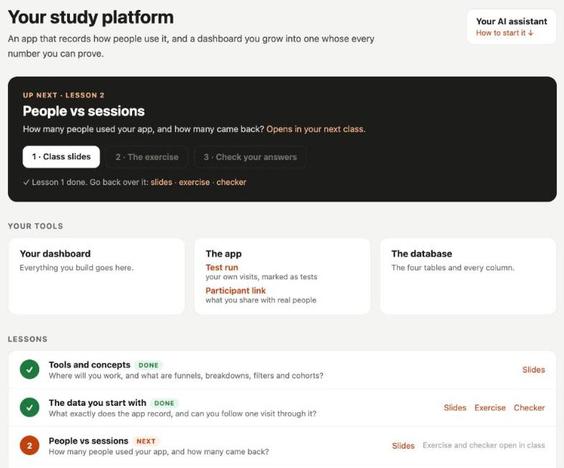
- The current lesson: slides, exercise, checker, in that order.
- Your tools: dashboard, the app, the database.
- Every lesson, with what you've finished.
Your site · dashboard
Dashboards: one board per lesson
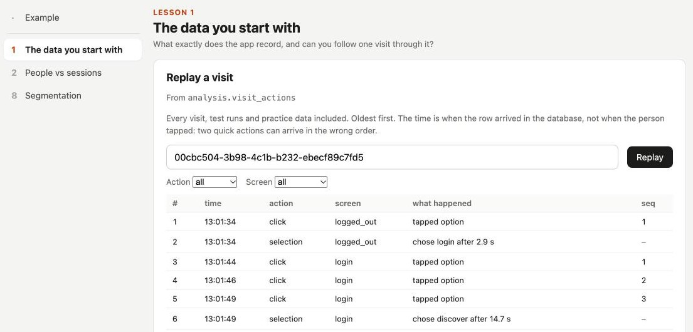
Each lesson gets a board for the panels you build. This one replays a single visit.
Your site · dashboard
Raw data: exactly what was recorded
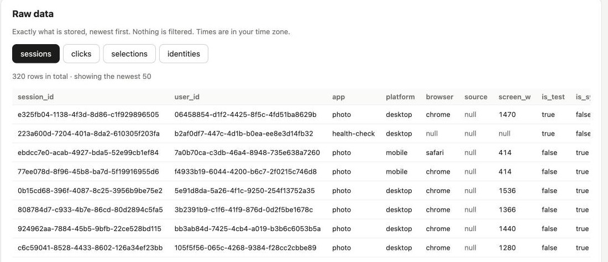
Nothing filtered: test runs, practice data and every app's rows are all here.
Your site · dashboard
Checks: is it working, and is it tidy?
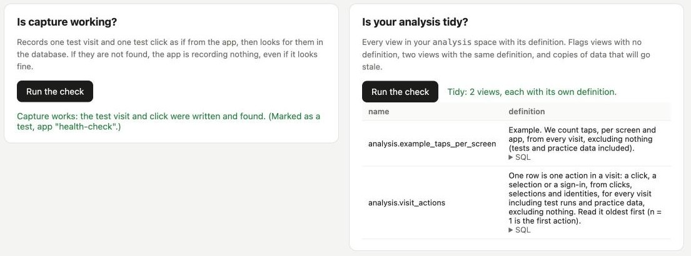
Capture writes a test row and finds it again. Tidiness lists every view with its definition.
Your site
The app people use, and the checker you answer
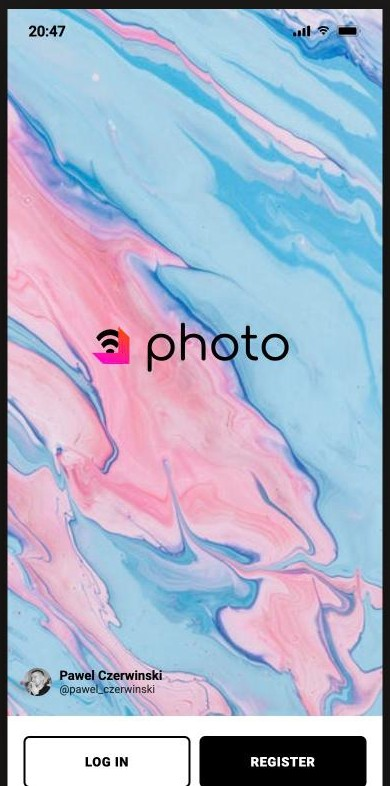
The app: a photo-sharing app. Every tap is recorded. Your own test runs are marked as tests.
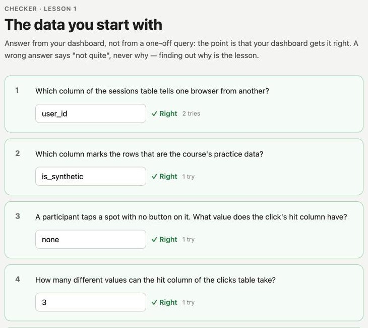
The checker: each lesson's questions, checked one by one, and your memo underneath.
GitHub
Your repository: every file of your platform
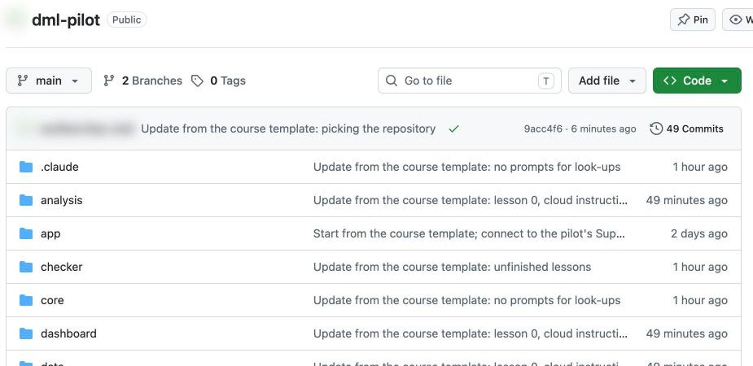
The app, the dashboard, the lessons, and the views you write. Public, so your site can be published.
GitHub
Commits: every change, saved with a note
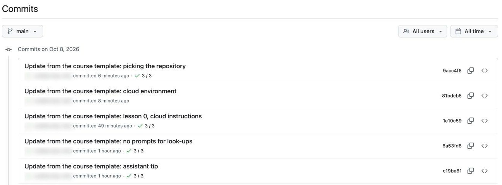
Your assistant commits each step. Nothing is lost, and any change can be undone.
GitHub
Pages: your repository, published as your site
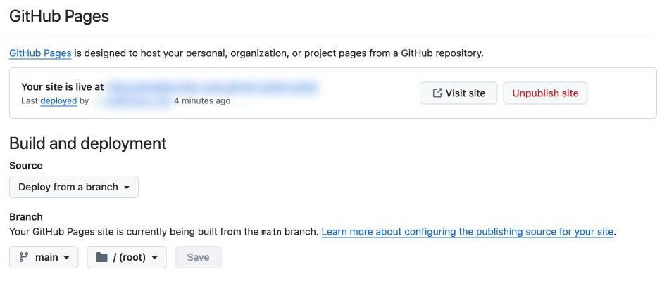
A minute after each change, your site shows it. Your data is never in the repository.
Supabase
Tables: what the app recorded
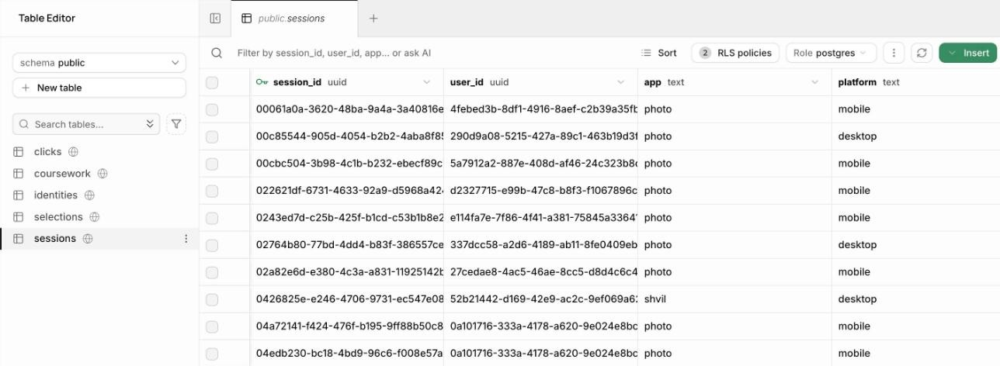
The four tables you meet in lesson 1. Nobody can change or delete these rows, not even you.
Supabase
The SQL Editor: where you run what your assistant writes
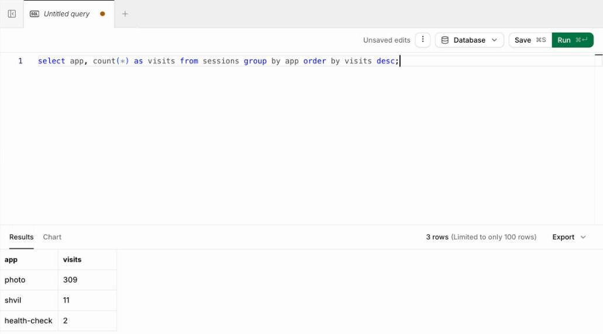
Practice data, and every view you build. Paste, press Run, read the result.
Claude
Your AI assistant, in the cloud, on your repository
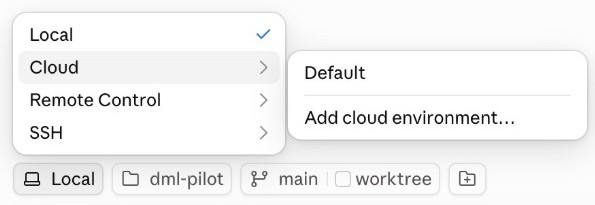
1 · In the Claude app: Code → + New, then switch Local to Cloud → Data-mindset (you create it in the setup).
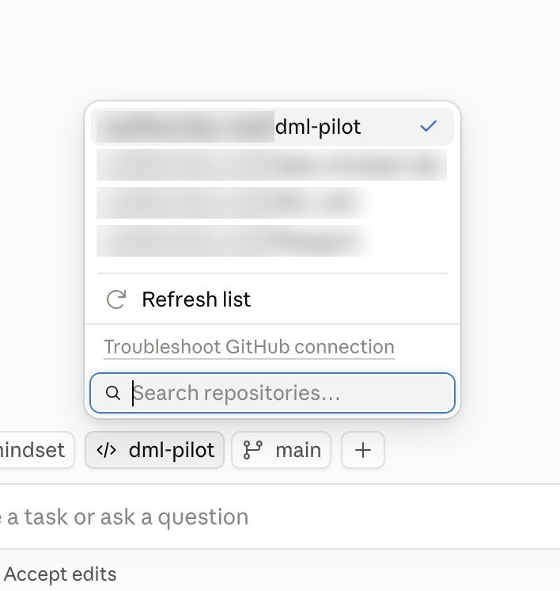
2 · Pick your team's repository. That's it: nothing to install.
Claude
It knows the course, and where you are in it
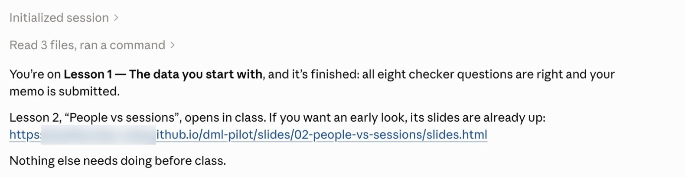
- Ask "What are we working on?"
- It reads your lesson and your progress.
- You define what a number means; it builds, and shows you the SQL to run.
Who does what
The split that runs through the course
You decide
What a number means, who is in it, what is left out, and whether to believe it.
The assistant builds
The SQL, the views, the panels, following your definitions.
The platform guarantees
That capture works, and that your analysis stays tidy.
Every lesson
The same four steps
1 · Slides
the idea, in class
→
2 · Exercise
build it with your assistant
→
3 · Checker
exact answers, from your dashboard
→
Part 2
The ideas every
analytics tool uses
You will see them in Mixpanel today. Over the course, you build each one yourself.
Event and property
Brewly, a coffee-ordering app, records what happens
| event | who | properties |
|---|
| App opened | u_812 | platform: ios |
| Menu viewed | u_812 | category: hot drinks |
| Added to cart | u_812 | drink: flat white · size: large |
| Order placed | u_812 | price: 4.80 · pickup: 8:15 |
An event is something that happened. Properties describe it. Who is an id. Whether that id is a person is lesson 2.
Funnel
How many get from the first step to the last?
22% of those who opened the app ordered. Behind that number: who counts, in what order, within how long.
Breakdown
The same funnel, split by a property
Opened app → ordered, by platform. A breakdown asks: is the number the same for everyone?
Filter
Choose who is in the number
22%
everyone
all who opened the app
31%
returning only
filter: not their first visit
9%
first visit only
filter: first visit
Same data, three true numbers. A filter changes who is counted, so it belongs next to the number.
Cohort and retention
A group, and whether it comes back
A cohort is a group defined by what its members did: everyone whose first order was in week 1.
Retention follows that group: what share ordered again in each later week?
In class · Mixpanel
Find each idea in a real tool
- Open the demo project. Find an event and its properties.
- Build a funnel of three steps. Then break it down by one property.
- Add a filter. Watch the numbers change, and say who is now in them.
- Look at retention for one cohort.
For every number, ask: who is counted, and who decided?
Lesson 0 · Summary
What you learnt
- Your site is home: lessons, app, dashboard, checker.
- GitHub holds and publishes your platform; every change can be undone.
- Supabase holds the data; nobody can change what was recorded.
- Your assistant builds; you decide what every number means.
- Events, properties, funnels, breakdowns, filters, cohorts, retention: each one hides a definition.
Your self-study
Before lesson 1: finish the one-time setup, so your app records and your dashboard signs in.